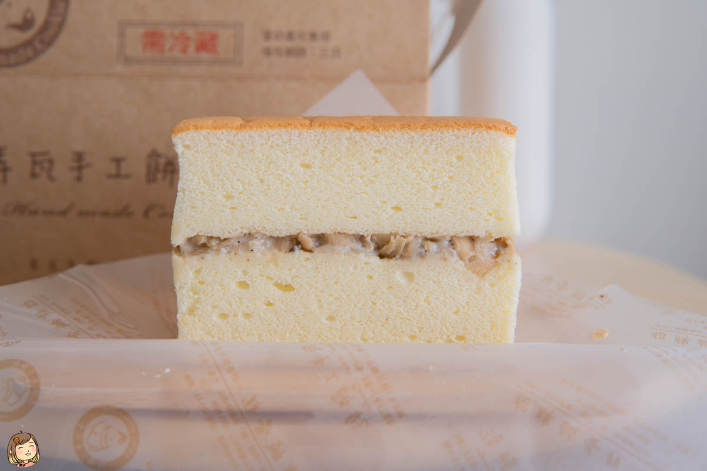

地址：406台中市北屯區橫坑巷19之8號
電話： 04 2239 1536
營業時間:08:00–20:00
店內並不大，小小的空間內販售了許多特色產品，除了這次會介紹到的竹筍鹹蛋糕之外，還有販售黃金乳酪球、喜餅、各式糕點等，個特色產品在店內都可以看見唷。
⭐⭐⭐⭐⭐
竹筍鹹蛋糕是將鬆軟且帶有濃郁奶香的古早味蛋糕作為上下的蛋糕體

中間夾著的是來自在地的竹筍丁、香菇、菜脯與美乃滋的獨家配料層。